<title>第 12 章　基於 SLO 警報的應對與除錯 — 《可觀測性工程》第二版</title>
<link rel="stylesheet" href="style.css">

<nav class="chapnav">
    <a href="ch11.html">← 上一章</a>
    <a href="index.html">目錄</a>
    <a href="ch13.html">下一章 →</a>
  </nav>
<main>
  <header class="masthead">
    <span class="eyebrow">Observability Engineering · Second Edition</span>
    
    <h1 class="title serif">第 12 章<br>基於 SLO 警報的應對與除錯</h1>
    <div class="rule"></div>
  </header>

  <p>在前一章中，我們介紹了 SLO，以及以 SLO 為基礎的監控方式，藉此讓警報更有效。本章將深入探討如何運用可觀測性資料，讓這些警報既可採取行動，又便於除錯。使用基於閾值的監控資料（也就是指標）的 SLO，所產生的警報難以採取行動，因為它們無法提供修復潛在問題的指引。然而，若 SLO 使用寬而結構化的事件資料，則能讓警報更加精確，也更容易除錯。</p>
<p>無論系統的可觀測性程度如何，使用 SLO 來驅動警報，都能有效降低警報的雜訊並提高其可行動性。SLI 可以被定義為以直接對齊業務目標的方式，衡量客戶對服務的體驗。錯誤預算在業務利益相關者與工程團隊之間，設定了清楚的期望。錯誤預算耗盡警報能讓團隊確保高度的客戶滿意度、與業務目標保持一致，並針對營運環境問題啟動適當的應對措施——而不會出現症狀式警報中常見的那種喧囂，也就是過量警報風暴成為常態的情況。</p>
<p>在本章中，我們將深入探討服務水準目標（SLO），檢視錯誤預算以及可用來觸發基於 SLO 之警報的機制。我們將拆解 SLO 錯誤預算是什麼、如何運作、可用於預測 SLO 錯誤預算耗盡的預測計算方式，以及為何在進行可靠計算時，必須使用寬而結構化的事件，而非基於時間的指標。</p>
<h2 class="section serif">在錯誤預算耗盡之前發出警報</h2>
<p>錯誤預算代表企業願意容忍的系統不可用時間上限。如果你的服務水準目標（SLO）是確保 99.9% 的請求成功，以時間為基礎的計算方式會指出，你的系統可以不可用</p>
<p>在一個標準年度中不超過 8 小時 45 分 57 秒（或每月 43 分 50 秒）。如前一章所示，基於事件的計算方式會根據合格標準檢視每一個個別事件，並持續統計「好」事件與「壞」（或錯誤）事件的數量。</p>
<p>由於可用性目標是以百分比表示，SLO 對應的錯誤預算是根據該時間段內收到的請求數量計算而來。在任何給定的時間段內，只能容忍一定數量的錯誤。當系統的整個錯誤預算都已耗盡時，該系統就不符合其 SLO 的規範。從你計算出的錯誤預算總量中減去失敗（已耗盡）的請求數量，這就是俗稱的「剩餘錯誤預算」。</p>
<p>為了主動管理 SLO 合規性，你必須在整個錯誤預算被燒盡之前，及早察覺並解決應用程式與系統的問題。時間至關重要。若要採取矯正措施以避免燒盡預算，你必須及早知道自己是否正朝著耗盡整個預算的軌跡前進。SLO 目標愈高，可供反應的時間就愈少。圖 12‑1 顯示一個錯誤預算燃燒情形的範例圖表。</p>
<figure class="plate">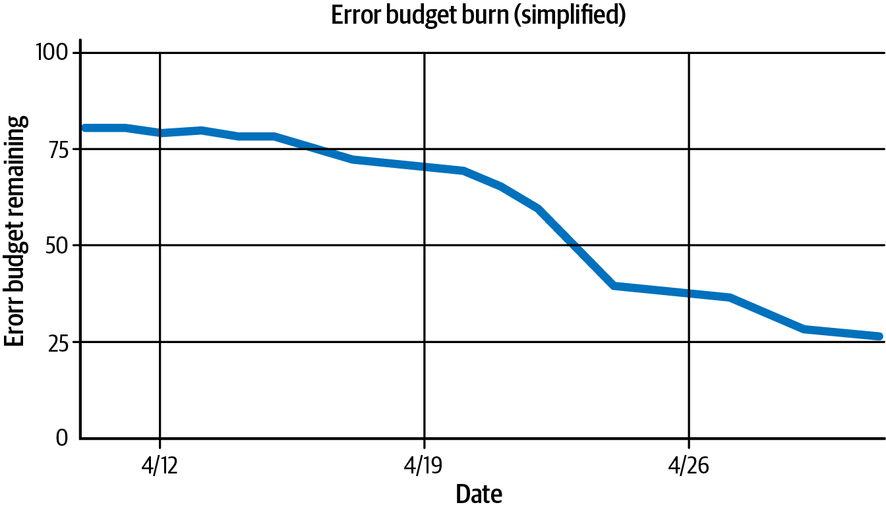
<figcaption>圖 12‑1　一個簡單的圖表，顯示大約三週內的錯誤預算燃燒情形。</figcaption></figure>
<p>對於高達約 99.95% 的 SLO 目標——意味著每月可容忍長達 21 分 54 秒的完全停機時間——存在一段相當合理的時間，讓團隊能收到潛在問題的警報，並仍有足夠時間在整個錯誤預算耗盡之前採取主動行動。</p>
<p>錯誤預算耗盡警報的設計目的，是在目前的燃燒率持續下去、未來將發生 SLO違規時，提早發出警告。因此，有效的耗盡警報必須預測系統屆時將剩餘的錯誤預算量</p>
<p>在未來某個時間點（從現在起可能是幾分鐘到幾天之後）耗盡。通常有多種方法可用來進行此計算，並決定何時觸發錯誤預算燃燒率的警報。</p>
<p>在繼續之前，值得注意的是，這類預防性計算方法對於目標值最高到 99.95%（如前面範例所示）的 SLO 效果最好。對於目標值超過 99.95% 的 SLO，這些計算方式的預防效果較差，但仍可用於回報並警示系統的劣化情況。</p>
<p>關於此情況的緩解措施，更多資訊請參閱 Betsy Beyer 等人編輯的《The Site Reliability Workbook》（O'Reilly, 2018）第5 章。對此主題的替代觀點有更深入興趣的讀者，我們建議閱讀整章內容。</p>
<div class="callout"><p>本章其餘部分將深入檢視並比較各種用於觸發錯誤預算耗盡警報的有效計算方法。讓我們來看看要讓錯誤預算耗盡警報正常運作需要哪些條件。首先，你必須從為「時間」這個相當相對的維度設定一個框架開始著手。</p></div>
<h2 class="section serif">以滑動視窗來框定時間</h2>
<p>第一個選擇是要以固定視窗還是滑動視窗來分析你的 SLO。固定視窗的例子是依照日曆計算——從每月 1 日開始、30 日結束。相對地，滑動視窗則是觀察任何連續往前推算 30 天的期間（見圖 12‑2）。</p>
<figure class="plate">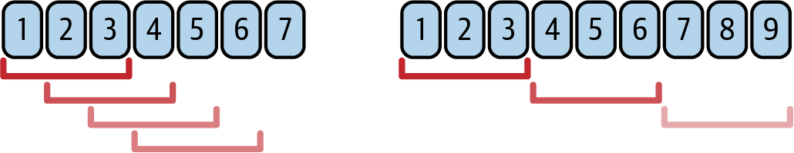
<figcaption>圖 12‑2：滾動三天視窗（左）與每三天重設一次的視窗（右）。</figcaption></figure>
<p>對大多數 SLO 而言，30 天的視窗是最務實的期間選擇。較短的視窗，例如 7天或 14 天，無法對應到客戶對你可靠性的記憶，也無法配合產品規劃的週期。90 天的視窗則往往太長；即使你在單一一天內就燒掉 90% 的錯誤預算，在技術上仍算符合 SLO，但客戶未必認同。過長的期間也代表事故不會夠快從統計中淡出。</p>
<p>你一開始或許會選擇固定視窗，但實務上，固定視窗的可用性目標並不符合客戶的期待。你可能會針對發生在 31 日的某次嚴重停機事故</p>
<p>月，但這並不能像變魔術一樣，讓他們突然對下個月第 2 天發生的後續中斷事故變得能夠容忍——即使那次中斷在法律上屬於不同的時間窗口。</p>
<p>如第 11 章所述，SLO 應該用來衡量客戶體驗與滿意度，而不是法律限制。更好的 SLO 會考量人類的情緒、記憶以及近因偏誤。人類的情緒不會在每個日曆月底神奇地重置。</p>
<p>如果你使用固定窗口來設定錯誤預算，這些預算會以劇烈的方式重置。任何錯誤都會消耗一小部分預算，累積效應會逐漸將其歸零。這種逐漸的耗損會不斷削減團隊主動應對問題的時間。然後，突然間，在新月份的第一天，一切都被重置，你又重新開始這個循環。</p>
<p>相較之下，使用滑動窗口來追蹤過去一段期間內所消耗的錯誤預算，能提供更平滑的體驗，也更貼近人類的行為模式。在每個時間區間，錯誤預算可能被消耗一點，也可能恢復一點。持續且低程度的消耗不會讓錯誤預算完全耗盡，即使是中等程度的下降，也會在經過足夠穩定的一段時間後逐漸回補。</p>
<p>在計算燃燒軌跡時，第一個該做的正確選擇，就是將時間框架設定為滑動窗口，而非靜態的固定窗口。否則，在窗口重置後，將沒有足夠的資料可以做出有意義的決策。</p>
<h2 class="section serif">透過預測建立預測性燃燒警報</h2>
<p>選定時間範圍後，你就可以設定觸發條件，在你關心的錯誤預算狀況發生時發出警報。最容易設定的警報是零層級警報——當整個錯誤預算耗盡時觸發。</p>
<h2 class="section serif">錯誤預算耗盡時會發生什麼事</h2>
<p>當你從正的錯誤預算轉為負的錯誤預算時，必要的做法是將工作重心從優先開發新功能轉移到提升服務穩定性上。錯誤預算耗盡之後究竟會發生什麼事，並不在本章討論範圍內。但團隊的目標應該是避免錯誤預算完全耗盡。</p>
<p>錯誤預算的過度支出會導致嚴厲的因應措施，例如在營運環境長期凍結功能開發。SLO 模型會建立誘因，讓團隊在預算耗盡後盡量減少危及服務穩定性的行動。若想深入了解在這類情況下工程實務應如何調整，以及</p>
<p>若要建立適當的政策，我們建議閱讀 Alex Hidalgo 所著的 Implementing Service Level Objectives，如第 11 章所述。</p>
<p>較難設定的是預防性警報。如果你能預見錯誤預算即將耗盡，你就有機會採取行動，導入修正措施以防止其發生。透過及早修正最嚴重的錯誤來源，你可以避免為了改善可靠性而必須放棄任何新功能開發的決定。就永續維持團隊士氣與穩定性而言，規劃與預測是比英雄式救火更好的方法。</p>
<p>因此，解決方法是追蹤你的錯誤預算燃燒率，並留意可能耗盡整個預算的劇烈變化。在本節中，我們將討論三種廣泛應用於軟體維運中、用於在歸零之前觸發燃燒警報的模型。</p>
<h2 class="section serif">閾值超標警報</h2>
<p>第一種方法是選定一個非零閾值作為警報依據。舉例來說，你可以在剩餘錯誤預算低於 30% 時觸發警報，如圖 12‑3 所示。</p>
<figure class="plate">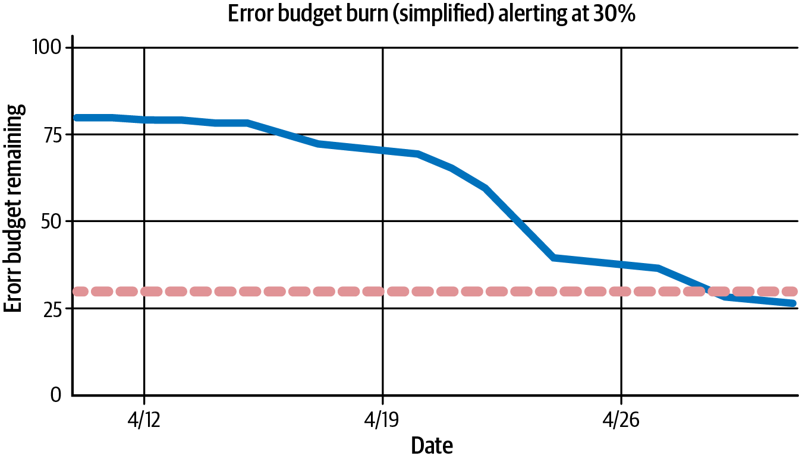
<figcaption>圖 12‑3。在此模型中，當剩餘錯誤預算（實線）低於所選閾值（虛線）時，即會觸發警報。</figcaption></figure>
<p>此模型的一項挑戰在於，它實際上只是設定了另一個歸零門檻，等於把球門柱移動了位置。這種「提前預警」系統可能有一定效果，但做法較為粗糙。實務上，一旦超過該閾值，你的團隊仍會表現得像整個錯誤預算已經耗盡一樣。此模型的優化目標是確保些微</p>
<p>留一點緩衝空間，讓團隊能達成目標。但這麼做的代價是,你必須放棄原本可以用來交付新功能的額外時間。取而代之的是,團隊會陷入功能凍結,等待剩餘的錯誤預算回升到高於任意設定的閾值。如果固定閾值的彈性不足,有什麼機制可以用來評估風險呢？</p>
<h3 class="subsection">相對錯誤預算耗盡警報</h3>
<p>《SRE 工作手冊》第 5 章提出的一種機制，是在某個基準（或回溯）視窗期間，依據錯誤預算計算實際錯誤數與允許錯誤數之間的比例。舉例來說，你可能會想觀察過去 15 分鐘的視窗，並判斷該視窗期間失敗請求的數量。接著，如果失敗請求數超過該視窗錯誤預算所按比例允許的失敗請求數，就發出警報，如圖 12‑4 所示。</p>
<figure class="plate">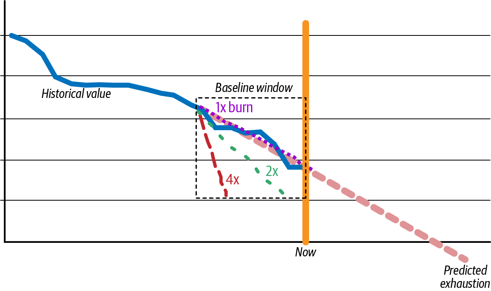
<figcaption>圖 12‑4　基線窗口期間可能想要設置警報的不同燃燒斜率（例如，1 倍燃燒率為正常狀態、持續一段時間的 2 倍燃燒率可能觸發非呼叫式警報，而基線窗口內 4 倍以上的燃燒率則會觸發呼叫式警報）。</figcaption></figure>
<p>讓我們來看一些範例。假設你的服務每月接收 1,000 萬個請求，並以 99.9% 為目標服務水準目標（SLO），那麼每月可容許 10,000 個請求失敗。每月有2,880 個 15 分鐘窗口，因此假設所有窗口的流量都相同，在穩定狀態下每 15分鐘大約可安全容許 3.4 個請求失敗。</p>
<p>在這種情況下，若要使用 4 倍的相對燃燒警報，你會希望在任何一個 15 分鐘的滾動視窗內，只要失敗請求數超過 13 筆，就發出警報，而不論該視窗內成功了多少請求。若是 20 倍的相對燃燒警報，則會在任何 15 分鐘滾動視窗內失敗請求超過 68 筆時觸發。</p>
<p>與靜態閾值警報最大的區別在於，這種方式仍會考量整個 SLO 時間範圍內的預期總請求率，而不是單純在任何回溯視窗的錯誤率超過 0.1%、0.3% 或 2%（分別對應 1 倍、3 倍與 20 倍比例）時就發出警報。在流量較低的時段，20 筆請求中有 1 筆失敗，不應該讓你的警報無故觸發。</p>
<h2 class="section serif">預測性燃燒警報</h2>
<p>第三種在零基準線以上觸發警報的模型，是建立預測性燃燒警報（見圖 12‑5）。這類警報會預測目前的狀況是否會耗盡你的整個錯誤預算。</p>
<figure class="plate">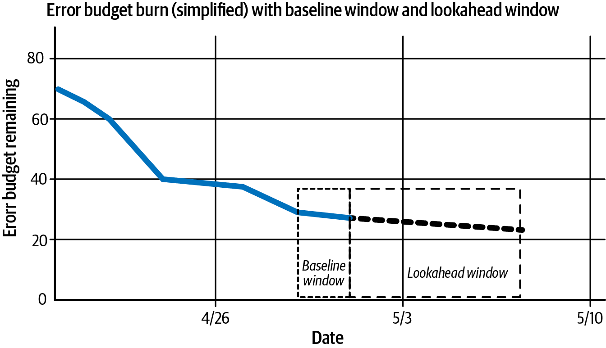
<figcaption>圖 12‑5：對於預測性燃燒警報，你需要一個近期資料的基準視窗來用於模型中，以及一個前瞻視窗來決定你的預測要延伸到多遠的未來。</figcaption></figure>
<p>使用預測性燃燒警報時，你需要考量前瞻視窗與基準（或回溯）視窗：你要對多遠的未來進行預測建模，又應該使用多少近期資料來做出這個預測？我們先從比較簡單的前瞻視窗開始討論。</p>
<h3 class="subsection">前瞻窗口</h3>
<p>在預測模型中，我們可以看到並非每一個影響錯誤預算的錯誤都需要把人叫醒。舉例來說，假設你引入了一項性能衰退，使得你那個 SLO 目標為 99.9% 的服務，照目前趨勢一個月後將只能達到 99.88% 的可靠性。這並不是需要立即處理的緊急狀況。你可以等到下一個工作日再讓人去調查，把整個月的整體可靠性軌跡修正回 99.9% 以上即可。</p>
<p>反過來說，如果你的服務有相當比例的請求發生失敗，照目前趨勢一小時內就會降到 98%，那就應該呼叫值班工程師。若不加以修正，這樣的中斷可能在短短幾小時內就把你整個月、整季甚至整年的錯誤預算耗盡。</p>
<p>這兩個例子都說明了一件重要的事：根據目前的趨勢，判斷你的錯誤預算是否會在未來某個時間點耗盡。第一個例子是在幾天內發生，第二個例子則是在幾分鐘或幾小時內發生。但在這樣的脈絡下，「根據目前的趨勢」究竟是什麼意思？</p>
<p>目前趨勢的範圍取決於我們想要預測多遠的未來。從宏觀尺度來看，大多數的生產流量模式在其使用率曲線上都會呈現出週期性行為與平滑化的變化。這種模式可能以分鐘或小時為週期出現。舉例來說，一個沒有抖動、以固定交易數量跑過你應用程式的定期 cron job，就會以可預測的方式影響流量，且每隔幾分鐘就會重複一次。週期性模式也可能以日、週或年為單位出現。例如，零售業就會經歷季節性的購物模式，在重大節日前後出現明顯的高峰。</p>
<p>在實務上，這種週期性行為意味著某些基準窗口比其他窗口更適合使用。過去30 分鐘或一小時的資料，對於接下來幾小時來說算是有一定代表性。但當放大視野去看每日的整體情況時，那些逐分鐘的小幅波動就可能會被平滑掉。若試圖用過去 30 分鐘或一小時這種微觀尺度的性能表現，去推斷未來幾天這種宏觀尺度的性能可能發生的狀況，就有可能導致警報條件反覆跳動、忽進忽出的「抖動」問題。</p>
<p>同樣地，反過來的情況也一樣危險。當一個新的錯誤狀況發生時，若要等到累積了整整一天的過往性能資料才能預測接下來幾分鐘可能發生什麼事，那並不切實際。等你做出預測時，你整年的錯誤預算可能早已被耗盡。因此，你的基準窗口應該與你的前瞻窗口大致處於同一個數量級。</p>
<p>在實務上，我們發現一個給定的基準窗口，最多只能以四倍的係數線性向前預測，而不需要另外針對季節性做補償（例如，</p>
<p>尖峰／離峰時段；平日與週末；月初與月底）。因此，只要將過去一小時的觀察表現外推四倍，就能得到「四小時後是否會耗盡錯誤預算」的足夠準確預測。這種外推機制將在第 206 頁的〈情境感知型錯誤預算耗盡警報〉中有更詳細的討論。</p>
<h3 class="subsection">根據目前的燃燒率外推未來</h3>
<p>計算前瞻視窗內可能發生的情況是一項簡單的運算，至少對於你第一次估算燃燒率而言是如此。如前一節所述，這種方法是根據目前的燃燒率來外推未來的結果：還要多久才會耗盡錯誤預算？</p>
<p>既然你已經知道可以用作基準線的近似數量級，就可以外推結果以預測未來。圖 12‑6 說明了如何從你所選定的基準線計算出軌跡，以判斷整個錯誤預算何時會被完全耗盡。</p>
<figure class="plate">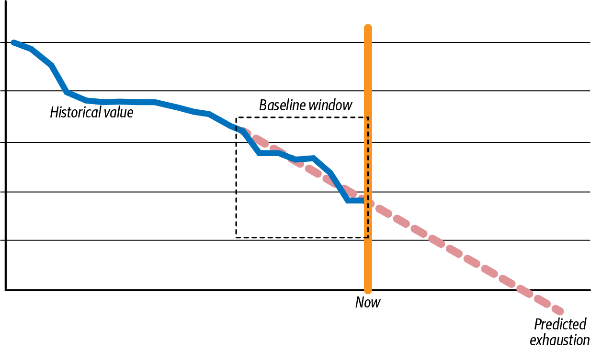
<figcaption>圖 12‑6。這張圖顯示錯誤預算的剩餘水位（y 軸）隨時間（x 軸）的變化。透過推斷基準窗格，你可以預測錯誤預算將在何時耗盡。</figcaption></figure>
<p>這種線性推斷的技巧也經常出現在容量規劃或專案管理等領域。舉例來說，如果你在票務系統中使用加權方式來估算任務所需時長，你很可能已經用過類似的做法，也就是透過衝刺燃盡圖來推斷某個功能可能會在未來哪個衝刺中交付。而在 SLO 與錯誤預算耗盡警報中，也是套用類似的邏輯，來協助排定需要立即處理的營運環境問題的優先順序。</p>
<p>計算初步猜測值相對簡單。然而，在預測預測性錯誤預算耗盡警報時，你必須權衡額外的細微差異，這些差異決定了未來預測的品質與準確性。</p>
<p>實務上，我們可以使用兩種方法來計算預測性錯誤預算耗盡警報的軌跡。短期錯誤預算耗盡警報僅使用最近時間段的基準資料來推算軌跡，不考慮其他因素。情境感知錯誤預算耗盡警報則會將歷史表現納入考量，並使用 SLO 整個追蹤窗口期間成功與失敗事件的總數來進行計算。</p>
<p>選擇使用哪種方法通常取決於兩個因素。第一個是計算成本與敏感度或特異度之間的權衡。情境感知錯誤預算耗盡警報在計算上比短期錯誤預算耗盡警報更昂貴。然而，第二個因素是一種哲學立場，即剩餘錯誤預算的總量是否應該影響你對服務降級的反應速度。如果在僅剩 10% 錯誤預算耗盡額度時解決一個重大錯誤，比在剩餘 90% 錯誤預算耗盡額度時解決同樣的重大錯誤更為緊急，那麼你可能會傾向使用情境感知錯誤預算耗盡警報。</p>
<p>在接下來的兩節中，「單位」指的是 SLO 錯誤預算耗盡警報計算所依據的細粒度建構區塊。這些單位可以由時間序列資料（如指標）組成。像指標這樣的粗略量測具有聚合的粒度，會將一個時間單位（如一分鐘或一秒）標記為好或壞。這些單位也可以由事件資料組成，每個個別事件對應一筆使用者交易，可標記為好或壞。在第 212 頁的〈Using Structured Event Data for SLOs Versus Time‑Series Data〉一節中，我們將檢視使用哪種資料類型所帶來的影響。目前，範例將採用與資料型別無關的方式，使用任意指定、每分鐘對應一個資料點的單位。</p>
<div class="callout"><p>讓我們來看看使用這兩種方法時如何做出決策的範例。</p></div>
<p>短期錯誤預算耗盡警報</p>
<p>當使用短期（無歷史）錯誤預算耗盡警報時，你會記錄基準窗口期間觀察到的實際失敗 SLI 單位數，以及符合 SLI 資格的單位總數。接著你會使用這些資料向前推算，計算出耗盡錯誤預算所需的分鐘數、小時數或週數。在此計算中，你會假設在基準窗口所觀察到的事件之前沒有發生任何錯誤，並使用該 SLO 通常會看到的量測單位數量。</p>
<p>讓我們來看一個範例。假設你有一個服務，其 SLO 目標為在滾動 30 天窗口內有 99% 的單位成功。在典型的月份中，該服務會處理 43,800 個單位。在過去24 小時內，該服務處理了 1,440 個單位，其中 50 個失敗。在過去 6 小時內，該服務處理了 360 個單位，其中 5 個失敗。若要達成 99% 的目標，每月只允許 1% 的單位失敗。根據典型的流量（43,800 個單位），只允許 438 個單位失敗（也就是你的錯誤預算）。你想知道以這樣的速率，是否會在接下來的 24小時內耗盡錯誤預算。</p>
<p>一個簡單的短期燃燒警報會計算出，在過去 6 小時內只燃燒了 5 個單位。因此，在接下來的 24 小時內，會再燃燒 20 個單位，總計 25 個單位。你可以合理地推斷不會在 24 小時內耗盡錯誤預算，因為 25 個單位遠小於你的 438 個單位預算。</p>
<p>一個簡單的短期燃燒警報計算，也會考慮到在過去一天內，你已經燃燒了 50個單位。因此，在接下來的 8 天內，會再燃燒 400 個單位，總計 450 個單位。你可以合理地推斷會在 8 天內耗盡錯誤預算，因為 450 個單位超過了你 438 個單位的錯誤預算。</p>
<p>這個簡單的數學運算是用來說明推算的機制。但實際上，情況幾乎肯定更為複雜，因為你符合條件的總流量通常會隨著一天、一週或一個月的時間而波動。換句話說，你無法可靠地估計過去 6 小時內的一個錯誤，就能預測接下來 24小時內會出現四個錯誤——如果這個錯誤發生在深夜、週末，或是你的服務流量只有平常中位數十分之一的時候。如果這個錯誤發生在流量只有十分之一的時候，你反而可能預期接下來 24 小時內會出現接近 30 個錯誤，因為隨著流量上升，這條曲線會逐漸平滑。</p>
<p>到目前為止，在這個範例中，為了簡化說明，我們一直使用線性外推法。但在營運環境中，比例外推法要有用得多。來看看前面範例的下一個變化。</p>
<p>假設你有一個服務，其 SLO 目標為在滾動 30 天窗口內有 99% 的單位成功。在典型的月份中，該服務會處理 43,800 個單位。在過去 24 小時內，該服務處理了 1,440 個單位，其中 50 個失敗。在過去 6 小時內，該服務處理了 50 個單位，其中 25 個失敗。若要達成 99% 的目標，每月只允許 1% 的單位失敗。根據典型的流量（43,800 個單位），只允許 438 個單位失敗（也就是你的錯誤預算）。你想知道以這樣的速率，是否會在接下來的 24 小時內耗盡錯誤預算。</p>
<p>以線性外推法計算，你會得出過去 6 小時內的 25 次失敗，意味著接下來 24 小時內會有 100 次失敗，總計 105 次失敗，這遠小於 438。</p>
<p>利用比例外推法，你可以計算出，在任何一個 24 小時的區間內，每 30 天預期會出現 43,800 個單位，也就是每天 1,440 個單位。在過去六小時內，50 個單位中有 25 個（50%）失敗。如果這個 50% 的失敗比例在接下來 24 小時內持續，你將燒掉 1,440 個單位的 50%，也就是 720 個單位——遠遠超過你 438 個單位的預算。透過這種比例計算，你可以合理推估，你的錯誤預算將在大約半天內耗盡。這時應該觸發警報，通知值班工程師立即調查。</p>
<p>情境感知型錯誤預算耗盡警報</p>
<p>在使用情境感知型（或稱歷史型）錯誤預算耗盡警報時，你會針對整個 SLO 窗口（而非僅基準窗口）持續累計已發生的成功與失敗事件總數。本節將拆解有效的錯誤預算耗盡警報所需進行的各種計算。但在實踐這些技巧時，你必須謹慎行事。在每個評估區間重新計算這些數值所產生的運算成本，可能很快就會變得所費不貲。在 Honeycomb，我們曾為此付出慘痛代價：一些小型 SLO資料集突然讓我們的 AWS Lambda 費用飆升到每天超過 5,000 美元，而一般用戶主動發起的查詢對這些資料集的花費每天卻只有數十美元。快取因此成為讓我們的系統得以擴展的必要策略。</p>
<p>為了了解情境感知型錯誤預算耗盡警報在考量上有何不同，讓我們來看一個範例。假設你有一項服務，其 SLO 目標是在一個移動的 30 天窗口內，99% 的單位要成功。在一般月份，該服務會有 43,800 個單位。在過去 26 天內，你已經在 37,960 個單位中失敗了 285 個。在過去 24 小時內，該服務出現了 1,460 個單位，其中 130 個失敗。為了達成 99% 的目標，每月只允許 1% 的單位失敗。根據典型的流量（43,800 個單位），只允許 438 個單位失敗（也就是你的錯誤預算）。你想知道，照這個速率，你是否會在接下來四天內燒光你的錯誤預算。</p>
<p>在這個範例中，你想以「天」為尺度向前推估。如前所述，使用最大實務外推係數 4，你會設定一個檢視過去一天資料的基準窗口，藉此向前外推四天。</p>
<p>你還必須考量所選尺度對滑動窗口的影響。如果你的 SLO 是一個滑動的 30 天窗口，那麼調整後的回顧窗口就會是 26 天：26 天的回顧窗口 + 4 天的外推天數 = 你的 30 天滑動窗口，如圖 12‑7 所示。</p>
<figure class="plate">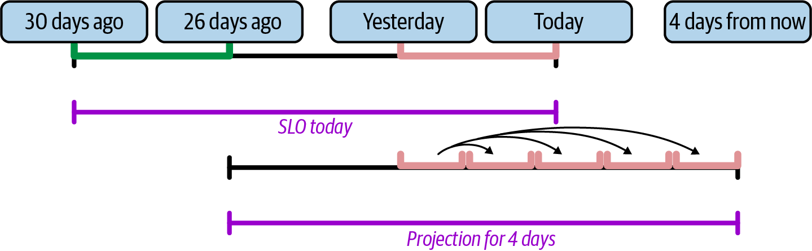
<figcaption>圖 12‑7　調整後的 SLO 30 天滑動視窗。當向前投射四天時，需要考慮的回溯期必須縮短為今天之前的 26 天。此投射方式是將基準視窗的結果複製到未來四天，並將其加入調整後的滑動視窗中。</figcaption></figure>
<p>定義好這些調整過的時間範圍後，你現在就可以計算四天後的未來狀況會是什麼樣子。要進行這項計算，你需要執行以下步驟：</p>
<p>1. 檢視過去 26 天內發生的 SLO 事件對映表中的每一筆條目。</p>
<p>2. 儲存過去 26 天內事件的總數，以及錯誤的總數。</p>
<p>3. 重新檢視過去一天內發生的對映表條目，以決定基準視窗的失敗率。</p>
<p>4. 假設接下來的表現會與一天的基準視窗類似，藉此推算未來四天的表現。</p>
<p>5. 計算四天後調整後的 SLO 30 天滑動視窗會是什麼樣子。</p>
<p>6. 如果錯誤預算屆時將被耗盡，就觸發警報。</p>
<p>以一個以 Go 語言撰寫的程式碼範例來說，假設你有一個時間序列對映表，其中包含每個視窗內的失敗與成功次數，你就能完成這項任務：</p>
<pre class="code"><span class="tok-keyword">func</span> isBurnViolation(
  now time.Time, ba *BurnAlertConfig, slo *SLO, tm *timeseriesMap,
) bool {
  <span class="tok-comment">// For each entry in the map, if it's in our adjusted window, add its totals.</span>
  <span class="tok-comment">// If it's in our projection window, store the rate.</span>
  <span class="tok-comment">// Then project forward and do the SLO calculation.</span>
  <span class="tok-comment">// Then fire off alerts as appropriate.</span>
  <span class="tok-comment">// Compute the window we will use to do the projection, with the projection</span>
  <span class="tok-comment">// offset as the earliest bound.</span>
  pOffset := time.Duration(ba.ExhaustionMinutes/lookbackRatio) * time.Minute
  pWindow := now.Add(-pOffset)
  <span class="tok-comment">// Set the end of the total window to the beginning of the SLO time period,</span>
  <span class="tok-comment">// plus ExhaustionMinutes.</span>
  tWindow := now.AddDate(<span class="tok-number">0</span>, <span class="tok-number">0</span>, -slo.TimePeriodDays).Add(
    time.Duration(ba.ExhaustionMinutes) * time.Minute)
  <span class="tok-keyword">var</span> runningTotal, runningFails int64
  <span class="tok-keyword">var</span> projectedTotal, projectedFails int64
  <span class="tok-keyword">for</span> i := len(tm.Timestamps) - <span class="tok-number">1</span>; i &gt;= <span class="tok-number">0</span>; i-- {
    t := tm.Timestamps[i]
    <span class="tok-comment">// We can stop scanning backward if we've run off the end.</span>
    <span class="tok-keyword">if</span> t.Before(tWindow) {
      <span class="tok-keyword">break</span>
    }
    runningTotal += tm.Total[t]
    runningFails += tm.Fails[t]
    <span class="tok-comment">// If we're within the projection window, use this value to project forward,</span>
    <span class="tok-comment">// counting it an extra lookbackRatio times.</span>
    <span class="tok-keyword">if</span> t.After(pWindow) {
      projectedTotal += lookbackRatio * tm.Total[t]
      projectedFails += lookbackRatio * tm.Fails[t]
    }
  }
  projectedTotal = projectedTotal + runningTotal
  projectedFails = projectedFails + runningFails
  allowedFails := projectedTotal * int64(slo.BudgetPPM) / int64(1e6)
  <span class="tok-keyword">return</span> projectedFails != <span class="tok-number">0</span> &amp;&amp; projectedFails &gt;= allowedFails
}</pre>
<p>為了計算範例問題的答案，你注意到在過去 26 天中，已經有 37,960 個單位，其中 285 個失敗。基線窗口為一天，將用來向前預測四天。在基線窗口開始時，你正處於資料集的第 25 天（即一天前）。</p>
<p>如圖 12‑8 所示，將結果視覺化為圖表後，你會發現在一天基線窗口開始時，你仍剩餘 65% 的錯誤預算。而現在，你只剩下 35% 的錯誤預算。在一天內，你已經燒掉了 30% 的錯誤預算。如果繼續以這個速率燃燒錯誤預算，遠遠不到四天就會耗盡。此時你應該觸發警報。</p>
<figure class="plate">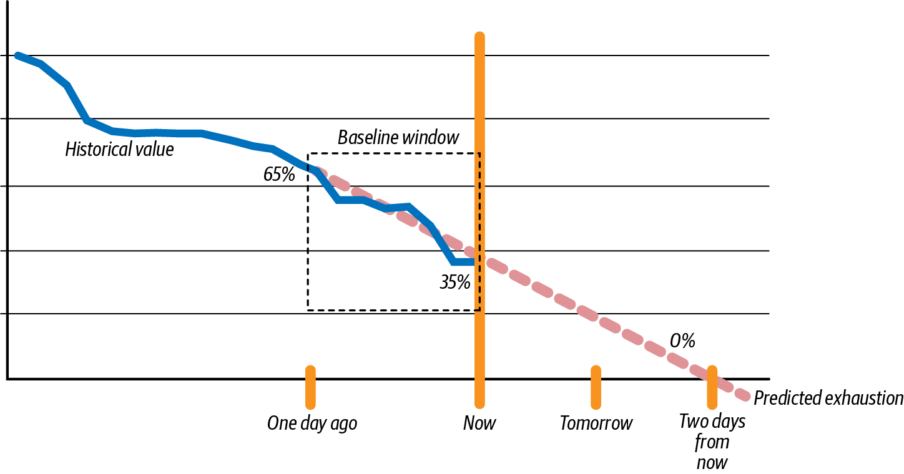
<figcaption>圖 12‑8。一天前，錯誤預算還剩 65%。現在，錯誤預算只剩 35%。以目前的速度，錯誤預算將在不到兩天內耗盡。</figcaption></figure>
<h2 class="section serif">前瞻窗口</h2>
<p>在探討過前瞻窗口及其使用方式之後，讓我們將注意力轉回基準窗口。</p>
<p>在向前推算時該用多長的基準線，是個有趣的問題。如果營運環境服務的性能突然急轉直下，你會希望能相當快地察覺到。但同時，你也不希望把視窗設得太小，導致產生雜訊過多的警報。如果你用 15 分鐘的基準線去推算三天的性能，錯誤數的一個小波動就可能觸發假警報。反之，如果你用三天的基準線去推算未來一小時，那麼在關鍵故障發生到你察覺之前，可能早已為時已晚。</p>
<p>我們先前提到，一個實用的做法是將所考量的時間線設為四倍的係數。你或許會發現有其他更複雜的演算法可用，但依我們的經驗，這個四倍係數通常相當可靠。這個四倍的基準線乘數同時也提供了一個方便的經驗法則：24 小時的警報是根據過去 6 小時的資料；4 小時的警報是根據過去 1 小時的資料，依此類推。這是初次著手處理 SLO 錯誤預算耗盡警報時，一個不錯的起點。</p>
<p>在按比例設定基準窗口時，還有一個奇怪的隱含結果值得一提。在一個 SLO 上使用不同的前瞻窗口大小設定多個錯誤預算耗盡警報是很常見的做法。因此，警報可能會以看似不合邏輯的順序被觸發。舉例來說，某個系統問題可能會觸發一個「兩小時內將耗盡預算」的錯誤預算耗盡警報，卻不會觸發「一天內將耗盡預算」的錯誤預算耗盡警報。這是因為這兩個警報的推算基礎來自不同的基準窗口。換句話說，如果照過去 30 分鐘的燃燒率持續下去，你會在兩小時內耗盡預算——但如果照過去一天的燃燒率持續下去，接下來四天都還安全無虞。</p>
<p>基於這些原因，你應該同時測量這兩者，並且只要其中任一個推算觸發警報就該採取行動。否則，你可能要等上數小時，才會在以一天為單位的燃燒曲線上發現問題——而以小時為粒度的錯誤預算耗盡警報，其實能讓你更早知道。此時及早採取修正行動，也可能因此避免觸發以一天為單位的推算警報。反過來說，雖然以小時為單位的窗口能讓團隊對燃燒率的驟然變化做出回應，但它在較長時間尺度（例如衝刺規劃）上用來排定任務優先順序時，雜訊卻太多了。</p>
<p>最後這一點值得稍微深入探討。要理解為什麼這兩種時間尺度都應該納入考量，我們來看看當 SLO 錯誤預算耗盡警報被觸發時，應該採取哪些行動。</p>
<p>針對 SLO 錯誤預算耗盡警報採取行動</p>
<p>一般來說，當錯誤預算耗盡警報被觸發時，團隊應該啟動調查性的回應。想更深入了解各種可能的回應方式，可以參考 Hidalgo 的《Implementing Service Level Objectives》一書。在這一節中，我們將探討幾個在考慮如何回應錯誤預算耗盡警報時，應該提出的較廣泛問題。</p>
<p>首先，你應該診斷收到的錯誤預算耗盡警報屬於哪種類型。這是一種新的、意料之外的燃燒情況嗎？還是比較漸進、預期之中的燃燒？我們先來看看消耗錯誤預算的各種模式。</p>
<p class="fn">圖 12‑9、圖 12‑10 與圖 12‑11 顯示了在整個 SLO 窗口期間，剩餘錯誤預算隨時間變化的情況。漸進式的錯誤預算燃燒——以緩慢但穩定的速度發生——是大多數現代生產系統的特徵。你預期系統會有一定的性能門檻，而少數例外會落在這個門檻之外。在某些情況下，特定期間內的擾動可能會導致例外以突發方式集中出現。</p>
<p>當錯誤預算耗盡警報被觸發時，你應該評估它究竟屬於突發狀況的一部分，還是一起可能一次燒掉大量錯誤預算的事故。將目前情況與歷史比率做比較，有助於為評估其重要性提供有用的脈絡。</p>
<figure class="plate">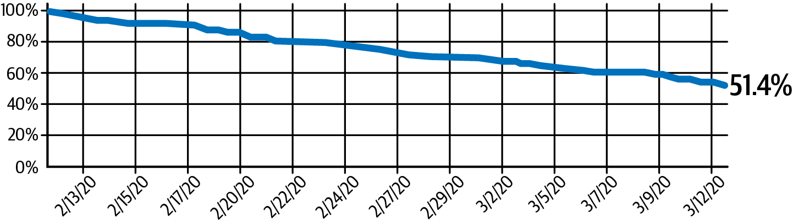
<figcaption>圖 12‑9。逐漸消耗的錯誤預算燃燒率，剩餘 51.4%。</figcaption></figure>
<figure class="plate">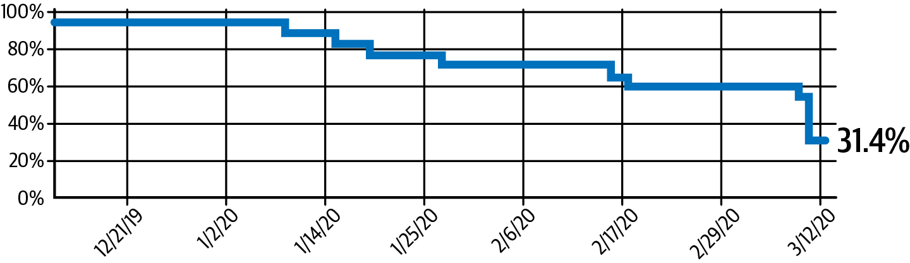
<figcaption>圖 12‑10。錯誤預算剩餘 31.4%，呈現爆發式消耗。</figcaption></figure>
<figure class="plate">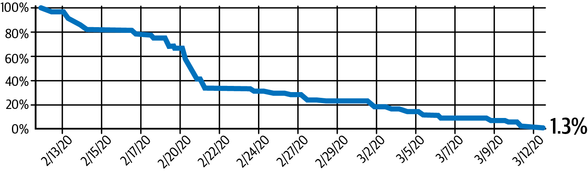
<figcaption>圖 12‑11。一個通常緩慢消耗預算的系統，發生一次事故一次性消耗了大量錯誤預算，僅剩餘 1.3%。</figcaption></figure>
<p class="fn">圖 12‑12 並非像圖 12‑10 那樣顯示過去 30 天的即時剩餘 31.4% 及其變化過程，而是拉遠視角，檢視過去 90 天中每一天的 30 天累積 SLO 狀態。約在二月初，這個 SLO 開始回升到目標閾值以上。這種情況的發生，部分原因在於某次效能大幅下滑的事件已滑出 90 天視窗範圍。</p>
<figure class="plate">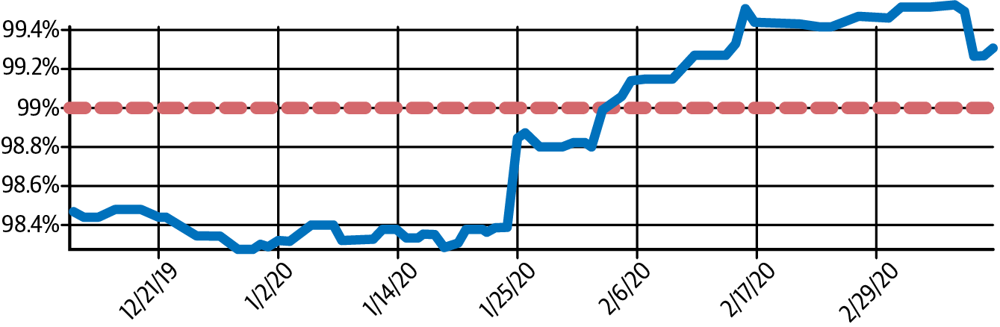
<figcaption>圖 12‑12。SLO 的 90 天滑動視窗表現低於 99% 目標，隨後在二月初回升。</figcaption></figure>
<p>了解 SLO 的整體趨勢，也能回答事件的緊急程度如何，並提供解決問題的線索。一次燒光預算，和長時間緩慢燒掉預算，暗示的是不同類型的故障。</p>
<h2 class="section serif">使用結構化事件資料與時間序列資料實現服務水準目標之比較</h2>
<p>使用時間序列資料來設定 SLO 會帶來一些複雜的問題。在前面小節的範例中，我們用一個通用的單位來判斷成功或失敗。在以事件為基礎的世界裡，這個單位是單一的用戶請求：這個請求成功了嗎？還是失敗了？而在時間序列的世界裡，這個單位則是特定的時間片段：整個系統在這段時間內是成功還是失敗？當使用時間序列資料時，衡量的是系統性能的整體聚合狀況。</p>
<p>在嚴格的服務水準目標（SLO）——那些設定 99.99% 可用性目標甚至更高的情況下，時間序列資料的問題會變得特別突出。在這類 SLO 下，錯誤預算可能在幾分鐘甚至幾秒鐘內就耗盡。在這種情境下，每一秒都特別重要，必須採取數種緩解措施（例如自動修復）才能達成該目標。如果負責處理的人員需要三分鐘才能確認警報、解鎖筆電、登入並手動執行他們想到的第一個修復方法（若問題複雜還需要進一步除錯，則需要更多時間），那麼在一秒內還是一分鐘內發現嚴重的錯誤預算耗盡，其差異就沒有太大意義了。</p>
<p>另一種緩解方式是使用事件資料（event data）而非時間序列資料來計算 SLO。想想看在嚴格 SLO 的情境下時間序列評估函式是如何運作的。舉例來說，假設你有一個 SLI 規定請求的 P95 必須小於 300 毫秒。錯誤預算的計算就需要把每個短時間區段分類為「好」或「壞」。若以每分鐘為單位進行評估，計算必須等到該分鐘結束後才能判定其</p>
<p>好的或壞的。如果該分鐘被判定為壞，你就已經損失了那一分鐘的回應時間。當錯誤預算可能在數秒或數分鐘內耗盡時，這種方式根本無法作為快速警報流程的起點。</p>
<p>「好分鐘」或「壞分鐘」的粒度根本不足以衡量四個 9 的 SLO。以前面的例子來說，如果只有 94% 的請求耗時低於 300 毫秒，整個分鐘就會被判定為壞。光是這一次評估，就足以一次燒掉你每月 4.38 分鐘錯誤預算的 25%。而如果你的監控資料僅以五分鐘為一個窗口收集（如 Amazon CloudWatch 免費方案的預設值），使用這種五分鐘窗口進行好壞評估，可能只要一次評估失敗就會導致違反你的 SLO 目標。</p>
<p>在使用時間序列資料計算 SLO 的系統中，一種緩解方式可能是這樣設計：當三次合成探測失敗時，自動觸發修復，之後再由人員事後複查結果。另一種做法則是在流量足夠大的前提下，利用指標來衡量較短時間窗口內即時失敗請求的百分比。</p>
<p>與「好分鐘／壞分鐘」情境中做出的彙總判斷不同，使用事件資料來計算 SLO能讓你以請求層級的粒度來評估系統健康狀況。沿用前述相同的 SLI 情境，任何單一請求的耗時只要低於 300 毫秒即視為好，超過 300 毫秒則視為壞。在94% 的請求耗時低於 300 毫秒的情境中，只有那 6% 的請求會從你的 SLO錯誤預算中扣除，而不是像 P95 這類彙總時間序列量測方式所扣除的 100%。</p>
<p>在現代分散式系統中，100% 全面失效的中斷比部分失效的降級（brownout）更少見，因此以事件為基礎的計算方式會有用得多。試想，一個可靠性99.99% 的系統發生 1% 的降級，與一個可靠性 99% 的系統發生 100% 的中斷，兩者的嚴重程度相近。測量部分中斷能讓你有更多時間應對，就好像那是一個服務水準目標（SLO）遠遠寬鬆許多的系統發生了全面中斷一樣。在這兩種情況下，你都有超過七小時的時間可以進行補救，才會耗盡當月的錯誤預算。</p>
<p>追蹤用戶實際使用服務體驗的事件資料，比粗略彙總的時間序列資料更能準確呈現系統狀態。雖然你隨時可以從事件資料最佳化並預先計算出服務水準目標（SLO）資料，但反向的轉換卻無法從已預先彙總的時間序列資料開始進行，萬一你需要變更服務水準指標（SLI）的判定條件時就是如此。從原始資料回填服務水準指標（SLI）與服務水準目標（SLO）的變更，能讓你有信心地反覆迭代調整它們，而不必等上好幾個月才知道對服務水準指標（SLI）與服務水準目標（SLO）所做的變更是否達到預期效果。在決定要使用哪些資料來進行可採取行動的警報時，使用可觀測性資料能讓團隊專注在</p>
<p>更接近業務真正關心的實際情況：也就是此刻正在發生的整體用戶體驗。</p>
<p>讓可靠性目標與團隊能夠負荷的範圍保持一致非常重要。若是極為嚴苛的 SLO（例如五個九的系統），你必須部署所有可用的緩解策略，例如根據極為細緻且準確的量測結果進行自動修復，藉此繞過需要數分鐘或數小時、由人工介入的傳統修復方式。不過，即使是 SLO 目標較不嚴苛的團隊，使用細緻的事件式量測方式，也能比傳統以時間序列為基礎的量測方式爭取到更多的應變緩衝時間。這段額外的緩衝時間可確保可靠性目標更加可行，不論你的團隊的 SLO 目標為何。</p>
<h2 class="section serif">結論</h2>
<p>我們已經探討了錯誤預算所扮演的角色，以及使用 SLO 時可用來觸發警報的機制。目前有多種預測方法可用來預測錯誤預算何時會被耗盡，每種方法各有其考量與取捨，希望本章能協助你了解該採用哪種方法，才能最符合你所屬組織的特定需求。</p>
<p>SLO 是一種現代化的監控形式，能解決許多與雜訊過多的監控相關的問題。SLO 本身並非可觀測性所獨有，可觀測性所帶來的獨特之處，在於事件資料為SLO 模型增添的額外能力。在計算錯誤預算燃燒率時，事件能對生產服務的實際狀態提供更準確的評估。此外，光是得知某個 SLO 有違約之虞，並不必然能提供你判斷哪些用戶受到影響、哪些相依服務受到波及，或是哪些用戶行為組合觸發了服務中的錯誤所需的洞察。將事件資料與 SLO 結合，有助於你在燃燒預算警報被觸發後，看清失敗發生的地點與時間。</p>
<p>在 SRE 方法與可觀測性驅動開發方法中，搭配包含大量屬性的結構化事件使用SLO，都是重要的一環。如同前幾章所見，分析失敗的事件能提供豐富而詳盡的資訊，說明問題出在哪裡以及原因為何，並有助於區分系統性問題與偶發性的零星故障。</p>
<p>從指標轉移為使用包含大量屬性的結構化事件會帶來不少挑戰。舉例來說，若你採用的是統一的可觀測性模型、而非單純仰賴指標，就不會使用時間序列資料庫。在下一章，我們將探討建構符合可觀測性工作負載性能需求的資料儲存所需的功能性需求，接著檢視兩個實作範例。</p>

  <footer class="colophon">
    <span>《可觀測性工程》第二版 · 第 12 章</span>
    <span>基於 SLO 警報的應對與除錯</span>
  </footer>
</main>
